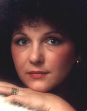

About the Artist...
Anne-Marie Brombal
As a native of Canada and a current resident of Texas, Anne-Marie Brombal has been involved in the creative arts in one form or another for most of her life. She can't remember a time when she wasn't trying to create something out of nothing. Her first dolls were created in childhood with scraps of leftover fabric, cardboard matchboxes, and bits of wax "borrowed" from her dad's dental lab. Not surprisingly, she went on to obtain diplomas in dental technology and radiological technology, but always remained a "closet" artist. Her "official" carreer choices and experience have provided her with much to draw on for doll body construction!
Now, many years later, as a multi-media doll artist, she creates dolls useing a wide variety of materials. Many are one-of-a-kind art dolls, while others are limited editions made using molds produced from her original sculpts. While her limited editions may have the same face, each on is individualized to the extent that it would never be considered a copy of another one. No two dolls are ever created the same way; she considers each to be a wonderful canvas for creative embellishment.
All of the artistic avenues that she has explored throught the years, from needlework to portraiture, from jewelry making to art glass, have provided her with a rich resource of skills and a wide knowledge base for creating her art dolls. Along with creating the dolls, her greatest joy lies in passing her creative skills and knowledge on to her students.
Anne-Marie turned to creating dolls after spending many years as a glass artist and instructor. After an international move to Australia in 1993, she returned to reproduction porcelain dolls, an interest from years past. After turning her focus to creating sculpted dolls in polymer clay, she joined the National Original Doll Artists of Australia (NODAA) and went on to win the "Australian Doll of the Year" award for two consecutive years, first for polymer clay (1996) and then for resin (1997). since then she has gone on to create dolls in polymer clay, porcelain, cloth, resin, and papier mache, using art glass to compliment many of her one-of-a-kind works. She has a special love of fiber arts, and a serious addiction to fabric, and continues to develp her skills with cloth and cloth-over-surface treatments.
In addition to winning the "Doll of the Year" awards, her work has received many show ribbons and has been featured in the "Gallery" pages of the Contemporary Doll Collector magazine, and has most recently had her work displayed in "Soft Dolls and Animals". In March of 2000, she won a first place award at the Santa Fe Art Doll Show in Albuquerque for her tableau entitled "Ivory Coast Lullaby".
Her subjects range from tiny babies to elderly folks; from fairies, gnomes, and mermaids to caterpillar and butterfly fantasy creatures. She has an affinity for winged creatures and uses the caterpillar and butterfly as her own personal mascot symbols, recognizing and applauding the amazing metamorphosis that has taken place in her own life.
Currently a member of the TAODA (Texas Association of Original Doll Artists) and the CDAA (Canadian Doll Arist's Association), as well as president of the "Ditzy Doll Tarts of Dallas", her local cloth doll club and personal passion, Anne-Marie is looking forward to sharing her knowledge with students who are looking to unleash their creativity and expand their dollmaking skills.